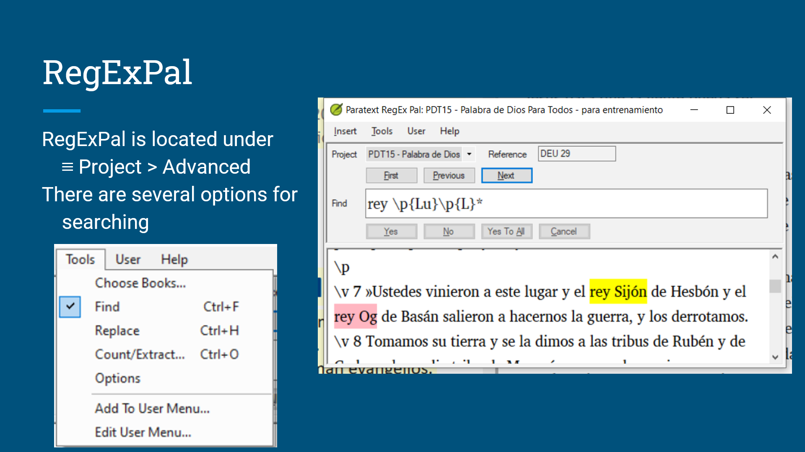
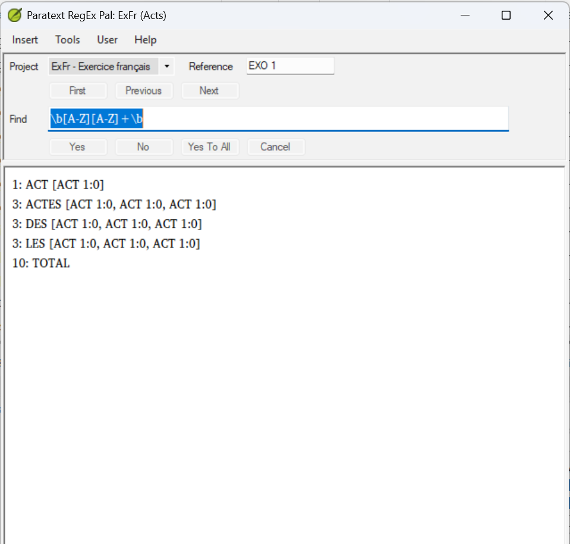
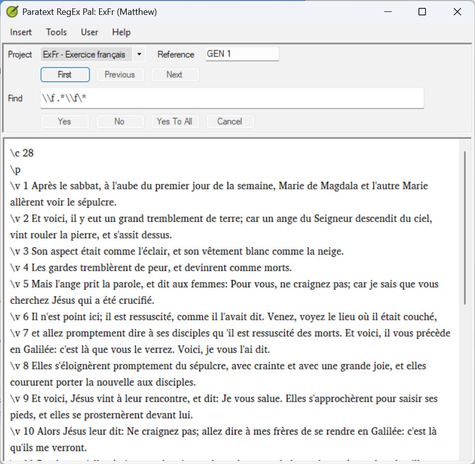
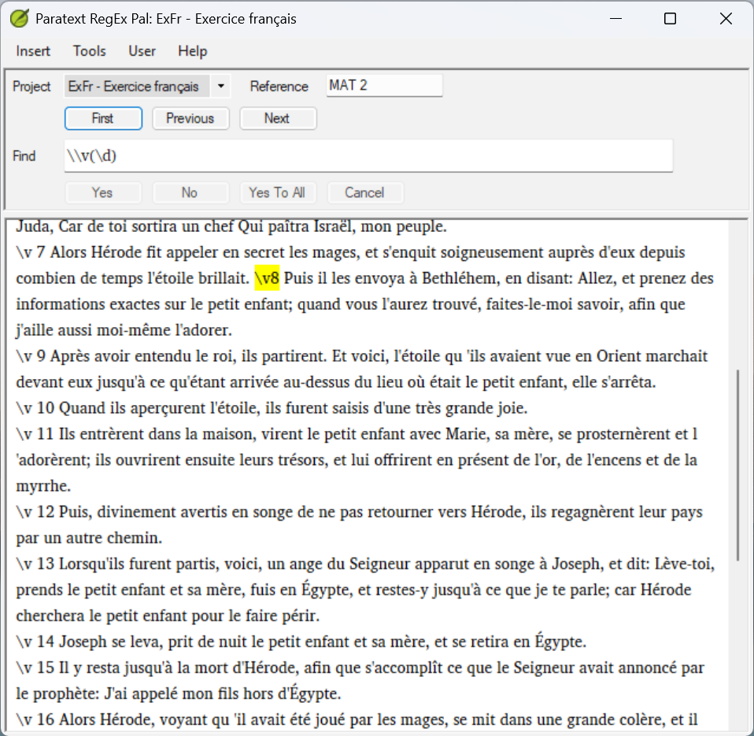
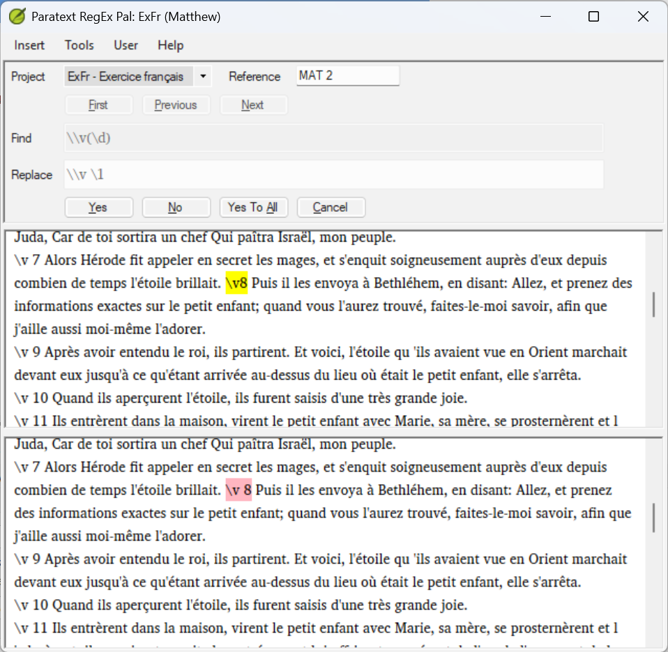

Using the RegEx Pal User Menu¶
Estimated time: 55 minutes
Purpose: Use the RegEx Pal User Menu with guidance to find, count, extract, and replace patterns in a Paratext project.
Learning objectives¶
By the end of this lesson you will be able to: - Use Find operations in the User Menu to safely locate formatting problems without changing any text - Use Count operations to measure how often a pattern appears in a project - Use Extract operations to pull matching content out for review - Run a Replace operation safely, reviewing each change as it's presented, with mentor support if unsure
Connect¶
Activity: What Would You Look For?¶
Think about a translation project you are currently working on or supporting. Before a book is sent for consultant checking, someone needs to make sure there are no small formatting problems hiding in the text.
Take a few minutes to think about these questions. You may find it helpful to jot down your answers before reading on.
- What kinds of formatting errors are hardest to spot just by reading through the text?
- Have you ever spent time looking for an error that turned out to be something very small — a missing space, a wrong character?
- What would help you find those problems more quickly?
A translator had just finished checking a complete book of the Bible and was ready for consultant review. Their mentor noticed that several formatted spans of text — divine names, emphasis markers — were not rendering correctly in the typeset output. Tracking down the cause took the better part of a day: a space had crept in before several closing markers like
\nd*and\wj*, invisible when reading the text but enough to break the formatting. Later they discovered that RegEx Pal could find every instance across the entire book in seconds.
Key Point: The User Menu in RegEx Pal is a collection of ready-made regex tools. The regex has already been written for you — your task is simply to learn how to run the tools and understand what the results mean.
Content¶
Opening RegEx Pal¶
RegEx Pal is a separate program, but the easiest way to open it is from within Paratext. To do so: 1. In the project you want to work in, click that project's menu icon (each open project window has its own menu, separate from Paratext's main menu). 2. Go to Advanced. 3. Click RegEx Pal....
Once open, RegEx Pal has its own Find, Replace, and Count/Extract modes, and a User menu of ready-made operations, shown here running a live search on a project:

NOTE RegEx Pal opens scoped to whichever project you opened it from. If you need to work with a different project, close RegEx Pal and reopen it from that project's menu instead.
What Is the User Menu?¶
The User Menu in Paratext RegEx Pal is a list of saved regex operations that you can run on your project with a single click. Someone has already done the work of writing the regex — all you need to do is select the right operation and run it.
To open it, click User in the menu bar. You will see a list of items. Your list may look different from your mentor's list or a colleague's list — that is completely normal. User menus can be customised over time, and can grow quite long (some experienced typesetters build up user menus with dozens of specialised entries — one typesetter's own menu runs to nearly 60 entries, most of them well beyond what this lesson covers).
Before you start: a new Paratext installation's User Menu starts empty — none of the operations in this lesson (Find close codes preceded by a space, Count all cap words, Extract all footnotes, Replace missing space after \v) will be there until you install a menu file. This module provides two options:
userMenu.txt— a shorter menu (about 20 entries) covering the essentials this lesson uses. Recommended if you're on a smaller screen.userMenu-Phil.txt— one experienced typesetter's much larger personal menu (nearly 60 entries), with many advanced operations well beyond this lesson. Everything used in this lesson is in here too, but it can be slower to scroll through.
Both include all four operations this lesson uses — pick whichever suits your screen and needs. To install one:
1. Close RegEx Pal and Paratext if they're open.
2. Copy your chosen file into your My Paratext 9 Projects folder (or My Paratext 8 Projects, depending on your installed version). Paratext only recognizes a file named exactly userMenu.txt — if you're using userMenu-Phil.txt, rename your copy to userMenu.txt once it's in that folder.
3. Reopen Paratext and RegEx Pal. Click User in the menu bar to confirm the new operations are listed.
You can switch between the two at any time by repeating these steps with the other file — the new one simply replaces whichever userMenu.txt is currently there.
NOTE Tools > Edit User Menu... is a different thing — that's for writing and adding your own individual regex entries one at a time (likely how the original author of userMenu.txt built theirs up over time). You don't need it just to use a menu file someone else has already prepared.
The operations in the menu fall into four categories: - Find — locate potential problems in the text - Count — measure how many times a pattern appears - Extract — pull specific content out for review - Replace — automatically fix a known pattern
In this session you will try one operation from each category, with step-by-step guidance for each one.
Key Point: Before running any operation, always check which books are selected. By default, RegEx Pal works across your entire project. Use Tools > Choose Books to limit the operation to one book at a time. This makes results much easier to understand, especially when you are just getting started.
Category 1: Find¶
A Find operation searches your project and shows you lines or locations that match a pattern. It does not change anything in your text — it only shows you where to look.
Find close codes preceded by a space¶
In USFM, a closing marker like \f* or \nd* must follow the text directly, with no space before the asterisk. A space before the asterisk is a very common typing mistake. It is invisible when you read the text, but it can cause formatting problems in the published output.
What the error looks like:
this is a footnote \f* ← the space before \f* is the problem
How to run it: 1. Open RegEx Pal and make sure your project is selected. 2. Use Tools > Choose Books to select one book. 3. Click User in the menu bar. 4. Click Find close codes preceded by a space. 5. Look at the results. Each result shows a location where a space appears before a closing marker.
What to do with the results: - If you get results, note the references and go to each location in Paratext to remove the extra space. - If you get zero results, that is a good outcome — it means no errors of this type were found in the book you selected.
Key Point: Find operations are always safe. They never change your text. You can run them as many times as you like.
Check your results: How many did you find? Were any of them surprising? Share your results with your mentor when you next connect — they can help you decide which need attention. If your mentor isn't available right now, use the "What to do with the results" guidance above to make an initial judgment yourself, then follow up with them.
Category 2: Count¶
A Count operation tells you how many times a pattern appears in your project or selected book. It gives you a number — and sometimes a list of references — rather than taking you to a specific location.
Count all cap words¶
This counts words written entirely in capital letters. All-cap words can appear for legitimate reasons — for example, some projects use them for divine names or section labels. But unexpected all-cap words can indicate a formatting or import error.
How to run it: 1. Use Tools > Choose Books to select one book. 2. Click User in the menu bar. 3. Click Count all cap words. 4. Look at the results.

What the results look like: each distinct all-cap word appears in the list along with how many times it occurred and its references — for example, 3: ACTES [ACT 1:0, ACT 1:0, ACT 1:0] means "ACTES" occurred 3 times, at those three locations. A TOTAL row at the end sums every match.
What to do with the result: - Think about whether the number seems right for the book you selected. - If your project uses all-cap words for a specific purpose, does the count match what you would expect? - If the number seems unexpectedly high, make a note to investigate further using a Find operation.
Key Point: A Count result on its own does not tell you whether something is right or wrong — you need to know your project's conventions first. If you are unsure how to interpret the number, discuss it with your mentor, or in the meantime compare it against a similar book in the same project.
Check your result: Does the number seem consistent with the project's conventions? Share what you got with your mentor and talk it through together. If they're not available right away, compare it with the same count on a different book in the same project in the meantime — a big difference between books is usually worth a closer look.
Category 3: Extract¶
An Extract operation copies matching content into a separate list so you can review it outside the main text. Nothing is deleted or changed in your project.
Extract all footnotes¶
This pulls every footnote from the selected book into a list with references, so you can read through them without navigating the whole text.
Note that Paratext's own Checklist view is often more useful for detailed footnote review — it can display just the footnotes alongside a comparative text. The Extract operation is useful when you want a plain text list, or when the Checklist view is not available.
How to run it: 1. Use Tools > Choose Books to select one book. 2. Click User in the menu bar. 3. Click Extract all footnotes. 4. Look through the list of results.

NOTE You'll see the same Yes/No/Yes To All/Cancel buttons here as in Find and Replace, but they're greyed out for Extract — the list is already complete, so there's nothing left to confirm.
What to do with the results: - Read through the extracted footnotes. - Check whether they look consistent in style and format. - If you notice anything that looks unusual, note the reference so you can check it in context.
Key Point: Extract operations are always safe. The original text is never changed — the operation only copies content into the results list.
Check what you noticed: Share anything unusual you spotted in the extracted list with your mentor and talk through whether it needs attention. If they're busy right now, flag it in your notes so you don't lose track of it, and bring it to them when you can.
Category 4: Replace¶
A Replace operation finds a pattern and changes it automatically. This is the most powerful type of operation in the User Menu — and the one that requires the most care.
Important: In RegEx Pal, Find and Replace are two modes on the Tools menu (Tools > Find, Ctrl+F, and Tools > Replace, Ctrl+H) that both run against the same loaded pattern. Choosing a Replace item from the User Menu loads its Find and Replace patterns and switches you into Replace mode — but you can switch to Find mode first, with that same pattern already loaded, to preview every match before anything is changed. Always do this before running an unfamiliar Replace operation.
Replace missing space after \v¶
In USFM, a verse marker must be followed by a space before the verse number: \v 3. If the space is missing — \v3 — this operation adds it automatically. This is a common problem in projects where text has been imported or pasted from another source.
How to run it:
1. Use Tools > Choose Books to select a test book — ideally not your main working book while you are learning.
2. Click User in the menu bar, then click Replace missing space after \v. This loads the Find pattern (\\v(\d)) and Replace pattern (\\v \1), and puts you in Replace mode.
3. Switch to Tools > Find (or Ctrl+F) to run that same pattern as a Find first — this shows you every match without changing anything, so you can see the full scope before committing to anything.

- When you're ready, switch back to Tools > Replace (or Ctrl+H).
- RegEx Pal steps through your selected book(s) and stops at each match it finds. A dialog shows the project, the reference (e.g. GEN 1), the Find pattern it matched (
\\v(\d)), and the Replace pattern it's about to apply (\\v \1). - For each match, choose Yes to apply that one fix, No to skip it, Yes To All to apply the fix to every remaining match without further prompts, or Cancel to stop.

NOTE Switching between Tools > Find and Tools > Replace keeps your loaded pattern, but clears whatever results list was showing — that's expected, not a sign you've lost your pattern. Each mode simply shows its own results.
Key Point: This operation gives you two layers of safety: a Find preview beforehand (steps 3-4) showing the full scope, and an interactive confirmation for every match during the Replace itself (steps 5-6). Use both — don't skip the Find preview just because the Replace is already interactive.
Take extra care here: This is the one operation in this lesson that changes your text, so try to have your mentor walk through it with you the first time. If they're not available right when you're ready to try this, go slowly on your own — read the reference and the Find/Replace pattern for every match before choosing Yes, and use No or Cancel rather than guess if anything looks unfamiliar. Follow up with your mentor afterward to confirm you read the matches correctly.
Key Takeaways¶
- The User Menu contains ready-made tools — you do not need to write regex to use them
- Find and Count operations are always safe — they never change your text
- Extract operations copy content for review without modifying the original
- Replace operations are powerful — always preview with Tools > Find first (using the pattern loaded from the User Menu item), then switch to Tools > Replace to apply changes; the
\vexample here also confirms each match interactively as you go - Always use Tools > Choose Books to limit the scope before running any operation
Challenge¶
Activity: Try It On Your Own Project¶
Work through each step below using a Paratext project. Take your time — there is no rush. If you are unsure about a result at any point, make a note to discuss with your mentor, and revisit the relevant section above in the meantime.
Step 1 — Find
Run Find close codes preceded by a space on one book of your project. - How many results did you get? - Can you see the space before the closing marker in each result? - Note the references of any results you found. - If you got zero results: well done — this book has no errors of this type.
Step 2 — Count
Run Count all cap words on the same book. - What number did you get? - Does that seem consistent with how your project uses all-cap words? - Make a note of the number to discuss with your mentor.
Step 3 — Extract
Run Extract all footnotes on the same book. - Look through the list. - Do the footnotes look consistent? - Note anything that looks unusual.
Step 4 — Replace
Select Replace missing space after \v from the User Menu on a test book, then switch to Tools > Find to preview the matches before changing anything. - How many matches did the Find preview show? - Now switch to Tools > Replace and watch each match as it's presented, deciding Yes, No, or Yes To All for each one. - If anything looks unexpected, choose Cancel and check with your mentor. If they're not available right away, don't proceed until you're confident you understand what the pattern would change.
Reflection Question¶
After working through these four steps, which operation felt most straightforward, and which felt least confident about? Note your answer — it is a useful starting point for your next conversation with your mentor.
Change¶
Personal Action Plan¶
Choose one action you will take before your next check-in with your mentor:
Option 1: Run the Find check on another book Run Find close codes preceded by a space on a second book in your project. Note the results and bring them to your mentor.
Option 2: Run the Count operation on two or three books Run Count all cap words on two or three books and record the numbers. Are they consistent with each other? Bring your notes to your mentor to discuss.
Option 3: Try the Replace workflow on a test project If you have access to a test project, try the full Replace missing space after \v sequence — preview with Tools > Find first, then switch to Tools > Replace and review each match as it's presented. Write down each step as you do it, and share what you noticed with your mentor.
Looking Ahead¶
Once you are comfortable using the User Menu with guidance, the next step is to use these tools independently — selecting the right operation for a given situation, interpreting the results without assistance, and deciding what action to take.